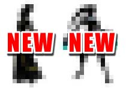
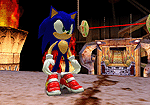

8／２４、２５、２６日（一般公開日は25、26日）に開催される
「任天堂スペースワールド2001」に
ソニックチームから
なんと４作品が出展されます！ その出展されるソフトタイトルはご覧の通り！
会場にはソニック、シャドウも登場！ 任天堂キャラクター達との共演が目撃できるかも！？
|
| ■
ゲームキューブ版／ 『 ファンタシースターオンライン (仮) 』 |

全世界対応ネットワークＲＰＧ『 ファンタシースターオンライン 』がゲームキューブに登場！
インターネットを通じて、世界中のプレイヤーと冒険が可能！
「ワードセレクトシステム」で言語の壁も乗り越え、世界中の人々と一緒に冒険しよう！
オフラインでも画面分割により4人まで同時プレイ可能だ！
|
|
【 チェックポイント . １】
|
●今回の展示ではなんと、ニンテンドーゲームキューブ実機による4人同時ネットワークプレイが可能に！

本作品のネットワーク接続については慎重な検証が重ねられてきましたが、この度正式に
他のソフトに先駆けて初めて「ネットワークＲＰＧ」としてニンテンドーゲームキューブ上
でのオンラインプレイが可能となりました。
是非、この機会に体験してください！
|
|
【 チェックポイント . ２】
|
●ニンテンドーゲームキューブ版、新キャクター（2体）がプレイ可能！

さらに今回ゲームキューブ版オリジナルの新キャクターがまずは2体
実際にプレイする事が出来る！
一体どんなキャクターなのか？
それは実際に会場でプレイして確かめて欲しい。
|
|
|
|
■ ゲームボーイアドバンス版／ 『 ソニック・ザ・ヘッジホッグ アドバンス (仮) 』
|
● 音速のハリネズミがＧＢＡを駆け抜ける！
今年、誕生から10周年を迎えるスーパーヒーロー・ソニックがゲームボーイアドバンスに華麗に登場！
さらにスピードアップしたソニックが、ＧＢＡの画面狭しと駆け抜けます。横スクロールのアクションステージを、
敵を倒しリングを集めながら宿敵Ｄｒ．エッグマンを追いつめろ。
頼れる仲間、テイルス・ナックルズ・エミーも
それぞれのアクションを披露してくれます。 ＧＢＡならではの、４人までの協力・対戦プレイも実現！
「ソニック・ザ・ヘッジホッグ アドバンス（仮）」、新世代に送るニュースタンダードです。
|

|
|
|
|
■ ゲームボーイアドバンス版／ 『 みんなで ぷよぷよ 』
|
● あの「ぷよぷよ」がＧＢＡにデビュー！
名作「ぷよぷよ」がＧＢＡに登場！ おなじみの「ひとりでぷよぷよ」「とことんぷよぷよ」
「ふたりでぷよぷよ」に、４人対戦の「みんなでぷよぷよ」モードも追加。
しかも、1カートリッジで4人まで対戦可能！
これまで、どうしても携帯ゲーム機の「ぷよぷよ」はその画面解像度上「ぷよ」の表示が小さく、 寂しい画面になってしまっていました。
ところが今回、ゲームボーイアドバンスの性能を活かして「ぷよ」の表示を大型化。 さらに「ファイヤー！」「アイスストーム！」「ばよえ〜ん！」
などの連鎖ボイスも完全装備！ いつでもどこでも家庭用ゲーム機さながらの「ぷよぷよ」が楽しめます！ 新世代に送るニュースタンダードです。
．．．詳細情報はこちら！
|

|
|
|
|
■ゲームキューブ版／『
ソニックアドベンチャー２ バトル 』
|

生誕10周年！
あの音速のハリネズミが
ニンテンドーゲームキューブに登場！！
|
|
|
＊ゲーム画面の画像は全て開発中のものです。製品版とは多少異なる事がございます。
任天堂スペースワールド2001の詳細についてはこちらをご覧ください。
ソニックチームＨＰトップへ戻る
Copyright (C)SONICTEAM,LTD. 2001 all rights reserved.